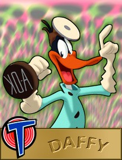

DaffyThe only major Warner Bros. cartoon stars to be established before Bugs, rather than in the wake of his success were Daffy Duck and Porky Pig. Daffy started life as the target of a hunter's rifle, just as Bugs did, and became a comedian through a totally unexpected reaction to that fact.
The film was Porky's Duck Hunt. A hunter himself, Avery thought it would be funny if one of Nature's Own turned the tables on his oppressor, and he created a screwball duck who didn't get scared and run away when somebody pointed a gun at him, but leapt and hopped all over the place like a maniac. In his best scene, the screwball duck does nothing more than dance away over a lake, in one long, mad shot--no camera movement, no great dialogue, just "Hoo-Hoo, Hoo-Hoo, Hoo-Hoo!," hopping on the water, turning handsprings, bouncing on his head, tumbling in the air, sidling on his heel, splashing on the surface, skidding far out of sight, and then swooping back again for another round.
"...When it hit the theaters," remembered Bob Clampett, who animated the scene, "it was like an explosion."
From this point on, the Warner Cartoon Studio had not only a concept but also a character: henceforth, its Looney Tunes would be Looney and its Duck would be Daffy.
Like Bugs, he needed to grow, to mature, to develop from this elemental debut, before he could realize his full potential. But he never lost the insanity he showed in his first cartoon. Instead, he would become a parody of himself; Daffy went on to become the lunatic fringe of his own cartoons, just as Bugs became the moral center of his.
 © 1996 Warner Bros.
© 1996 Warner Bros.